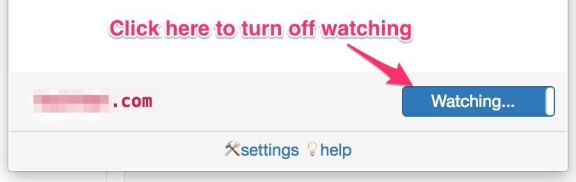

Session Timer
Session Timer
A Chrome Extension to rescue your time by notifying after customizable time limit while browsing time killing sites.

You May Ask…
What does it mean by watchlist here?
It's just a list of websites. You have to add your time killing sites to this list. Then, this extension will automatically set notification timer in background when you'll open a listed site.
How to turn off watching after adding a site in watchlist?
Go to the website. Click on the Extension icon on browser toolbar.
Then you should see watching... toggle button beside the site name if it's already in watchlist.
Click that button to remove from watchlist.

Why some items are showing with yellow background in watchlist?
Showing yellow background means timer is on for this site at this moment.
What if I've missed or closed (by x button) the Notification?
System will periodically (every 2 minutes) check for this type of missed sessions. And if found one, notification will be revived for it.
technical Is it checking for time matching at every moment? (resource hungry?)
Nope! When you open a listed site, the notification time is pre-calculated and set to Chromes native Alarm API. And then at the right moment, when Chrome responses back, we show you the notification.